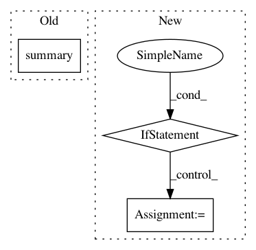

5a3f444696ba821ce35e165747cd03c6e03b6c5a,art/estimators/embedding/keras.py,KerasAdversarialEmbedding,__init__,#KerasAdversarialEmbedding#Any#Any#Any#Any#Any#Any#Any#Any#Any#Any#Any#Any#Any#Any#Any#Any#Any#Any#Any#,54
Before Change
losses = {"output_" + str(i + 1): loss for i, loss in model.outputs}
losses["backdoor_detect"] = "binary_crossentropy"
// losses = {"output_1": model.losses[0], "output_2": "binary_crossentropy"}
print(self.embed_model.summary())
self.embed_model.compile(loss=losses, loss_weights=[1.0] * len(self.model.loss_weights_list) +
[self.regularization])
After Change
self.embed_model = Model(inputs=self.model.inputs, outputs=self.model.outputs + [backdoor_detect])
// print("printing model summary")
// Assuming outputs are default named output_1, ... output_n
if not model.losses:
// Assuming output layer is last layer
output_layer = len(model.layers) - 1
losses = {model.layers[output_layer].name: model.loss, "backdoor_detect": "binary_crossentropy"}
else:
// TODO: this makes no sense
losses = {"output_" + str(i + 1): loss for i, loss in model.outputs}
losses["backdoor_detect"] = "binary_crossentropy"
// losses = {"output_1": model.losses[0], "output_2": "binary_crossentropy"}
// print(self.embed_model.summary())
// TODO: dynamically set optimizer and metric from original model
self.embed_model.compile(optimizer="adam", loss=losses, loss_weights=[1.0] * len(self.model.loss_weights_list) +
[-self.regularization],
metrics=["accuracy"])
print("model loss")
In pattern: SUPERPATTERN
Frequency: 3
Non-data size: 3
Instances
Project Name: IBM/adversarial-robustness-toolbox
Commit Name: 5a3f444696ba821ce35e165747cd03c6e03b6c5a
Time: 2020-08-07
Author: ebube.chuba@ibm.com
File Name: art/estimators/embedding/keras.py
Class Name: KerasAdversarialEmbedding
Method Name: __init__
Project Name: deepfakes/faceswap
Commit Name: 1d07dbaa5dde892e34dc17c6ffd115a83879969b
Time: 2021-03-10
Author: 36920800+torzdf@users.noreply.github.com
File Name: plugins/train/model/_base.py
Class Name: ModelBase
Method Name: _output_summary
Project Name: tensorflow/models
Commit Name: f2ea2f537967af92fd47eeeb91b0e312aedaddad
Time: 2019-05-24
Author: tobyboyd@google.com
File Name: official/transformer/v2/transformer_main.py
Class Name: TransformerTask
Method Name: eval